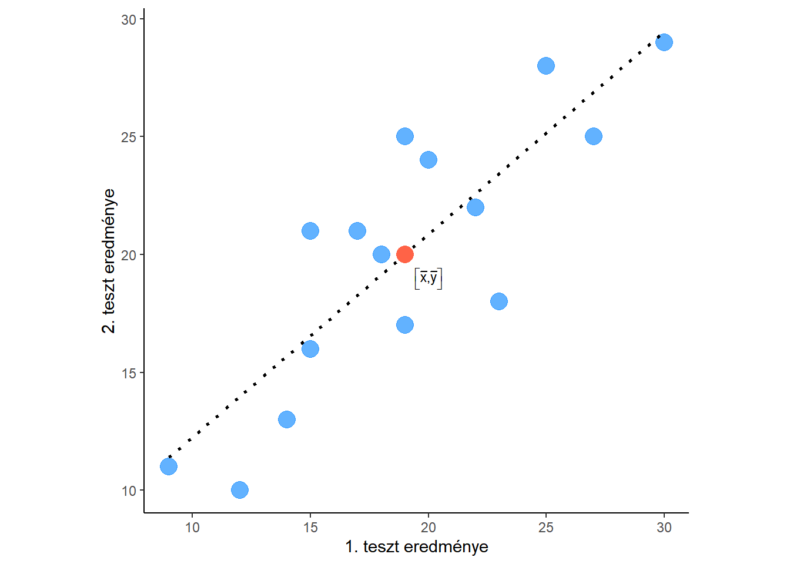

A lineáris regresszió során először a becslő egyenes két paraméterét fogjuk becsülni. Először a \(b_1\) paramétert:
\[b_1 = \frac{\sum_{i=1}^{n}(x_i-\overline{x})\times(y_i-\overline{y})}{\sum_{i=1}^{n}{\left(x_i-\overline{x}\right)^2}}\]
Ha megnézik a képletet, ennek számlálója ugyanaz, mint a korreláció képletének a számlálója volt, a nevezőhöz pedig ebben az esetben csak az x változó eltéréseinek négyzetösszege kell, az y változóé nem. Ezekre viszont később szükség lesz, úgyhogy - ha már úgy is jól begyakoroltuk - tegyük azt, amit a korrelációnál is tettünk! A példa pedig legyen az előbbi: mennyit magyaráznak a kilépő teszt eredményéből a "hozott" különbségek (az első teszt eredménye)?
Az adatok:
| Sorszám | 1. | 2. | 3. | 4. | 5. | 6. | 7. | 8. | 9. | 10. | 11. | 12. | 13. | 14. | 15. |
| 1. teszt | 15 | 20 | 25 | 30 | 27 | 18 | 19 | 22 | 9 | 14 | 12 | 15 | 17 | 19 | 23 |
| 2. teszt | 21 | 24 | 28 | 29 | 25 | 20 | 17 | 22 | 11 | 13 | 10 | 16 | 21 | 25 | 18 |
| Sorszám | $$x_i$$ | $$y_i$$ | $$x_i-\overline{x}$$ | $$y_i-\overline{y}$$ | $$(x_i-\overline{x})(y_i-\overline{y})$$ | $$(x_i-\overline{x})^2$$ | $$(y_i-\overline{y})^2$$ |
|---|---|---|---|---|---|---|---|
| 1. | 15 | 21 | -4 | 1 | -4 | 16 | 1 |
| 2. | 20 | 24 | 1 | 4 | 4 | 1 | 16 |
| 3. | 25 | 28 | 6 | 8 | 48 | 36 | 64 |
| 4. | 30 | 29 | 11 | 9 | 99 | 121 | 81 |
| 5. | 27 | 25 | 8 | 5 | 40 | 64 | 25 |
| 6. | 18 | 20 | -1 | 0 | 0 | 1 | 0 |
| 7. | 19 | 17 | 0 | -3 | 0 | 0 | 9 |
| 8. | 22 | 22 | 3 | 2 | 6 | 9 | 4 |
| 9. | 9 | 11 | -10 | -9 | 90 | 100 | 81 |
| 10. | 14 | 13 | -5 | -7 | 35 | 25 | 49 |
| 11. | 12 | 10 | -7 | -10 | 70 | 49 | 100 |
| 12. | 15 | 16 | -4 | -4 | 16 | 16 | 16 |
| 13. | 17 | 21 | -2 | 1 | -2 | 4 | 1 |
| 14. | 19 | 25 | 0 | 5 | 0 | 0 | 25 |
| 15. | 23 | 18 | 4 | -2 | -8 | 16 | 4 |
| $$\overline{x}= 19 $$ | $$\overline{y}= 20 $$ | $$\sum: 394 $$ | $$\sum: 458 $$ | $$\sum: 476 $$ |
Ez eddig ismerős. A fenti táblázatból kiolvasható minden adat, amelyre \(b_1\) becsléséhez szükségünk van:
\[b_1 = \frac{394}{458}= 0,86\]
Ez persze kerekített eredmény. A továbbiakban kerekítés nélkül számolok tovább (számítógéppel könnyű), hogy néhány érték azonosságát meg tudjam mutatni, ami segítheti az önellenőrzést is. A megjelenített értékek viszont mindig kerekítettek lesznek.
A fenti táblázatban eddig a következőket érdemes megnézni önellenőrzés gyanánt: az átlagok mindig a szélső értékek közé esnek, ráadásul normális eloszlású változóknál kb. középre. Így pl. a 19 átlag a 9 és a 30 értékek közé. Ezért az átlagtól való eltérések között mindig találunk pozitív és negatív számokat is. Az eltérések sima összege 0, de ezt általában nem érdemes kiszámítani, mert idő.
Különösen érdemes odafigyelni az átlagok kiszámítására, mert ezen állnak vagy buknak a továbbiak. Ezután pedig arra, hogy ne csússzanak el a sorok, a megfelelő értékeket szorozzák, illetve arra, hogy a szorzatnak jó legyen az előjele. A négyzetre emelt értékek mindig pozitívok.
Értelmezzük a kapott paramétert: a \(b_1 = 0,86\) paraméter az egyenes meredeksége, vagyis azt jelenti, hogy aki a belépő teszten egy ponttal többet szerzett, az a kilépő teszten várhatóan 0,86 ponttal teljesít jobban. Minden egyes plusz pont a belépő teszten ennyi plusz pontot jelent várhatóan a kilépő teszten.
Ezek után kiszámíthatjuk a \(b_0\) paramétert. Ehhez azt használjuk ki, hogy a két átlag által megadott pont mindig a becslő egyenesen található:

Ezért, ha az x átlagát helyettesítjük a becslő egyenes képletébe, az eredmény az az y érték lesz, amely éppen az egyenesen van, vagyis y átlaga:
\[\overline{y}=b_0 + b_1*\overline{x}\]
Ebből:
\[\begin{aligned}
b_0 &= \overline{y} - b_1*\overline{x}\\
\\
b_0 &= 20 - 0,86*19 = 3,7
\end{aligned}\]
Értelmezzük ezt a paramétert is: ez az az y érték, amelynél a becslő egyenes metszi az y tengelyt, vagyis az x = 0 értéknek megfelelő becslés. Ha valaki az első tesztjére 0 pontot kapott volna, a második teszten várhatóan 3,7 pontja lett volna.
Itt tegyünk ismét egy kitérőt: A megfigyeléseink között 9 és 30 közötti x értékek szerepelnek, vagyis ez az az intervallum, amelyre a lineáris modell jónak tűnik. Nem tudhatjuk, mi történik ezen értékek alatt és fölött. Elképzelhető, hogy ott is érvényes az egyenes által modellezett összefüggés, de az is, hogy nem. Az ilyen extrapolációkkal mindig óvatosnak kell lenni. Interpolációra viszont alkalmas a modell, úgyhogy erre mindjárt nézünk is példákat.
Ezzel kiszámítottuk a becslő egyenes mindkét paraméterét. Az egyenes képlete:
\[y = 3,7 + 0,86*x\]
Ez a képlet felhasználható arra, hogy adott x értékekre kiszámítsuk a várható y értéket. Ezek lehetnek olyan x értékek, amelyek szerepeltek a mintában (nemsokára ezekre is kiszámítjuk), de olyanok is, amelyek nem (intrapoláció). A képlet:
\[\hat{y}=b_0 + b_1*x\]
Például, ha \(x=16\), akkor y értéke várhatóan:
\[\hat{y} = 3,7 + 0,86*16 = 17\]
Ha \(x = 21\), akkor y:
\[\hat{y} = 3,7 + 0,86*21 = 22\]
Ugyanígy, kiszámítható a becslés mindenkire, aki bekerült a mintába:
| Sorszám | $$x_i$$ | $$y_i$$ | $$\hat{y}$$ |
|---|---|---|---|
| 1. | 15 | 21 | 16.000,5589519650655.000 |
| 2. | 20 | 24 | 20.000,8602620087336.000 |
| 3. | 25 | 28 | 25.000,1615720524017.000 |
| 4. | 30 | 29 | 29.000,4628820960699.000 |
| 5. | 27 | 25 | 26.000,882096069869.000 |
| 6. | 18 | 20 | 19.000,1397379912664.000 |
| 7. | 19 | 17 | 20.000 |
| 8. | 22 | 22 | 22.000,5807860262009.000 |
| 9. | 9 | 11 | 11.000,3973799126638.000 |
| 10. | 14 | 13 | 15.000,6986899563319.000 |
| 11. | 12 | 10 | 13.000,9781659388646.000 |
| 12. | 15 | 16 | 16.000,5589519650655.000 |
| 13. | 17 | 21 | 18.000,2794759825327.000 |
| 14. | 19 | 25 | 20.000 |
| 15. | 23 | 18 | 23.000,4410480349345.000 |
| Átlagok: | 19 | 20 | 20 |
A fenti táblázatban szeretném felhívni a figyelmüket néhány dologra:
A következő lépés, hogy kiszámítsunk a modell illeszkedését mérő determinációs együtthatót (R² értéket). Ezen a ponton választhatunk, hogyan számolunk tovább:
Megnézzük mindkettőt, a továbbiakban pedig Önökre van bízva, melyiket követik.
Ehhez azt kell megnézni, mennyire szóródnak a becslések. Mint láttuk, a becslések átlaga egyenlő az y változó átlagával, ezért nem kell külön kiszámítani. Az alábbi négyzetösszeget kell kiszámítanunk:
\[SSR = \sum_{i=1}^{n}{\left(\hat{y}_i-\overline{y}\right)^2}\]
Első lépésben minden becslésből kivonjuk az y átlagát (20), és ezt második lépésben négyzetre emeljük és összeadjuk. Önellenőrzési lehetőség, hogy ezúttal is pozitív és negatív eltérések egyaránt kell, hogy legyenek, és ezek összege egyébként 0 (de ennek kiszámítására nem érdemes időt pazarolni).
Ha számológéppel számolnak, érdemes rögtön négyzetre emelni a különbséget, mert ezzel időt takaríthatnak meg. Az alábbi táblázat már ezt a két oszlopot is tartalmazza. A négyzetes eltérések összege lesz az SSR, vagyis a teljes négyzetösszegnek az a része, amit a modellel magyarázunk.
| Sorszám | $$x_i$$ | $$y_i$$ | $$\hat{y}_i$$ | $$\hat{y}_i-\overline{y}$$ | $$\left(\hat{y}_i-\overline{y}\right)^2$$ |
|---|---|---|---|---|---|
| 1. | 15 | 21 | 16.000,5589519650655.000 | -3.000,44104803493448.000 | 11.000,8408115787264.000 |
| 2. | 20 | 24 | 20.000,8602620087336.000 | 0.000,860262008733621.000 | 0.000,740050723670404.000 |
| 3. | 25 | 28 | 25.000,1615720524017.000 | 5.000,16157205240174.000 | 26.000,6418260521348.000 |
| 4. | 30 | 29 | 29.000,4628820960699.000 | 9.000,46288209606987.000 | 89.000,5461375641197.000 |
| 5. | 27 | 25 | 26.000,882096069869.000 | 6.000,882096069869.000 | 47.000,3632463149063.000 |
| 6. | 18 | 20 | 19.000,1397379912664.000 | -0.000,860262008733628.000 | 0.000,740050723670416.000 |
| 7. | 19 | 17 | 20.000 | 0.000 | 0.000 |
| 8. | 22 | 22 | 22.000,5807860262009.000 | 2.000,58078602620087.000 | 6.000,66045651303369.000 |
| 9. | 9 | 11 | 11.000,3973799126638.000 | -8.000,60262008733625.000 | 74.000,50723670411.000 |
| 10. | 14 | 13 | 15.000,6986899563319.000 | -4.000,30131004366812.000 | 18.000,5012680917603.000 |
| 11. | 12 | 10 | 13.000,9781659388646.000 | -6.000,2183406113537.000 | 36.000,2624854598501.000 |
| 12. | 15 | 16 | 16.000,5589519650655.000 | -3.000,4410480349345.000 | 11.000,8408115787266.000 |
| 13. | 17 | 21 | 18.000,2794759825327.000 | -1.000,72052401746725.000 | 2.000,96020289468165.000 |
| 14. | 19 | 25 | 20.000 | 0.000 | 0.000 |
| 15. | 23 | 18 | 23.000,4410480349345.000 | 3.000,4410480349345.000 | 11.000,8408115787266.000 |
| $$\overline{x}=19$$ | $$\overline{y}=20$$ | $$\sum: 0.000$$ | SSR: 338.000,943231441048.000 |
Mint a kiemelt sorokban láthatják, ahol ugyanannyi volt a becslés, ott az átlagtól való eltérés (és annak négyzete) is egyezik. Ahol pedig a becslés éppen y átlagával volt egyenlő, ott 0 az eltérés. A kapott összeg az SSR.
Ehhez a becslések és a tényleges y értékek közötti különbségeket, vagyis a hibatagokat (reziduálisokat) kell kiszámítani, majd ezek négyzetösszegét. Ez lesz az SSH.
Számológéppel ebben az esetben is gyorsabb, ha rögtön négyzetre emelnek. A négyzetre emelés miatt annak igazából nincs jelentősége, hogy az y-ból vonják ki a becslést, vagy fordítva. Az önellenőrzés szempontjából hasznos, ha következetesen vonnak ki, mindig ugyanabból, mert akárcsak a korábbi esetekben, itt is pozitív és negatív eltérések egyaránt kell, hogy legyenek. Összegük 0.
\[SSH = \sum_{i=1}^{n}{e_i^2} = \sum_{i=1}^{n}{\left(y_i - \hat{y}_i\right)^2}\]
| Sorszám | $$x_i$$ | $$y_i$$ | $$\hat{y}_i$$ | $$e_i$$ | $$e_i^2$$ |
|---|---|---|---|---|---|
| 1. | 15 | 21 | 16.000,5589519650655.000 | 4.000,44104803493448.000 | 19.000,7229076485954.000 |
| 2. | 20 | 24 | 20.000,8602620087336.000 | 3.000,13973799126638.000 | 9.000,85795465380144.000 |
| 3. | 25 | 28 | 25.000,1615720524017.000 | 2.000,83842794759825.000 | 8.000,5667321370684.000 |
| 4. | 30 | 29 | 29.000,4628820960699.000 | -0.000,462882096069869.000 | 0.000,214259834862035.000 |
| 5. | 27 | 25 | 26.000,882096069869.000 | -1.000,882096069869.000 | 3.000,54228561621632.000 |
| 6. | 18 | 20 | 19.000,1397379912664.000 | 0.000,860262008733626.000 | 0.000,740050723670413.000 |
| 7. | 19 | 17 | 20.000 | -3.000 | 8.000,99999999999999.000 |
| 8. | 22 | 22 | 22.000,5807860262009.000 | -0.000,580786026200872.000 | 0.000,3373124082302.000 |
| 9. | 9 | 11 | 11.000,3973799126638.000 | -0.000,397379912663754.000 | 0.000,157910794988653.000 |
| 10. | 14 | 13 | 15.000,6986899563319.000 | -2.000,69868995633188.000 | 7.000,28292748040654.000 |
| 11. | 12 | 10 | 13.000,9781659388646.000 | -3.000,97816593886463.000 | 15.000,8258042371427.000 |
| 12. | 15 | 16 | 16.000,5589519650655.000 | -0.000,558951965065501.000 | 0.000,312427299250585.000 |
| 13. | 17 | 21 | 18.000,2794759825327.000 | 2.000,72052401746725.000 | 7.000,40125092961615.000 |
| 14. | 19 | 25 | 20.000 | 5.000 | 25.000 |
| 15. | 23 | 18 | 23.000,4410480349345.000 | -5.000,4410480349345.000 | 29.000,6050037184645.000 |
| $$\overline{x}=19$$ | $$\overline{y}=20$$ | $$\sum: 0.000$$ | SSH: 137.000,56768558952.000 |
Az utolsó lépés, amit végrehajtunk ebben a fejezetben a modell illeszkedését mérő determinációs mutató (R²) kiszámítása. Ezt a fent kapott SSR-ből vagy SSH-ból és az SST-ből számíthatjuk ki. Utóbbi a már kiszámított
\[SST = \sum_{i=1}^{n}{\left(y_i-\overline{y}\right)^2}\]
négyzetösszeget jelenti. Ezt már az első táblázatban kiszámítottuk: \(SST = 476\)
Azt is tudjuk, hogy \(SST = SSR + SSH\), ezért elég az SSR-ből és SSH-ból csak az egyiket kiszámítani.
Az R² képlete attól függően, melyik utat választották:
\[R^2=\frac{SSR}{SST}=\frac{338,94}{476}=0,71\]
vagy
\[R^2=1-\frac{SSH}{SST}=1-\frac{137,06}{476}=0,71\]
Az R² azt méri, hogy az y változó teljes varianciájából mekkora részt tudunk a bevont független változók segítségével megmagyarázni. A regresszió a teljes szórásnégyzetet két részre bontja: a megmagyarázott rész a regressziós szórásnégyzet (SSR), a megmagyarázatlan rész pedig a reziduálisok négyzetösszege (SSH). A fenti példára lefordítva: a kilépő teszt eredményeinek különbségeit 71,2%-ban magyarázzák a hozott különbségek (a belépő teszt eredményei), a fennmaradó 28,8%-ban pedig egyéb tényezők (mennyit tudott készülni a tesztre, mennyire követte figyelemmel az előadásokat, mennyi energiát fektetett a feladatok megoldásába, mennyi szerencséje volt a kitöltés során, stb.)
Eddig az alábbi lépéseket hajtottuk végre:
Innen folytatjuk a következő fejezetben.